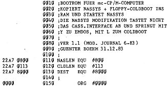
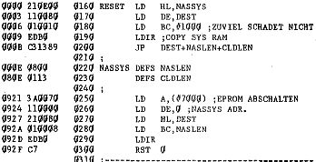

80-Bus Journal |
Dezember 1983 · Ausgabe 12 |
Wir wollen also eine Routine im EPROM haben, mit der wir ohne „fremde Hilfe“ von der Diskette lesen können. Diese recht kleine Routine sei hier „Cold-Booter“ genannt. Sie erkennt automatisch, ob es sich bei einer eingelegten Diskette um Single oder Double Density handelt, und liest (immer nur von Laufwerk A) die ersten beiden Sektoren der Spur 00. Die Routine kann auf jedem Z80-Rechner laufen und ist von keinem Betriebssystem abhängig (wenn man die Fehlermeldung, die die Nassys-Breakpointroutine benutzt, durch HALT ersetzt).
Das Cold-Boot Programm (wie erwähnt für beide Formate), ist im EPROM abgelegt oder wurde (wie in meinem mc-System) nach Einschalten oder Reset ins Ram kopiert. Es gäbe die Möglichkeit, ohne residenten Monitor nach dem Einschalten des Rechners das Betriebssystem direkt durch den Cold-Booter von der Diskette zu laden. Wenn nun aber irgend ein Fehler auftreten sollte, sind Sie ohne Monitor völlig hilflos bei der Fehlersuche. Deshalb empfiehlt es sich, auch einen (wenn auch kleinen) Monitor zur Verfügung zu haben. In meinem Fall (siehe Heft 6/83) stehen 4K EPROM zur Verfügung, in die Nassys und der Cold-Booter bequem hineinpassen. Bei der Nascom Grundplatine, die ja nur 2K EPROM ab 0000H faßt, sollte man vielleicht auf den alten Monitor T2 zurückgreifen und in den zweiten Sockel den Cold-Booter stecken. Für Besitzer der verschiedenen RAM/EPROM- Karten ergibt sich vielleicht eine andere Möglichkeit, neben Nassys noch einen EPROM- Platz freizuhalten, der später ausgeblendet werden kann.
Ich für meinen Fall habe Nassys3 so geändert, daß mit dem Drücken von „L“ der Cold-Booter angesprungen wird. Im folgenden nochmals die Routine, die Nassys3 und den Cold-Booter aus dem EPROM ins RAM lädt, Nassys auf 00 zurückkopiert und Nassys initiiert.
 | Seite 16 von 28 |
|---|